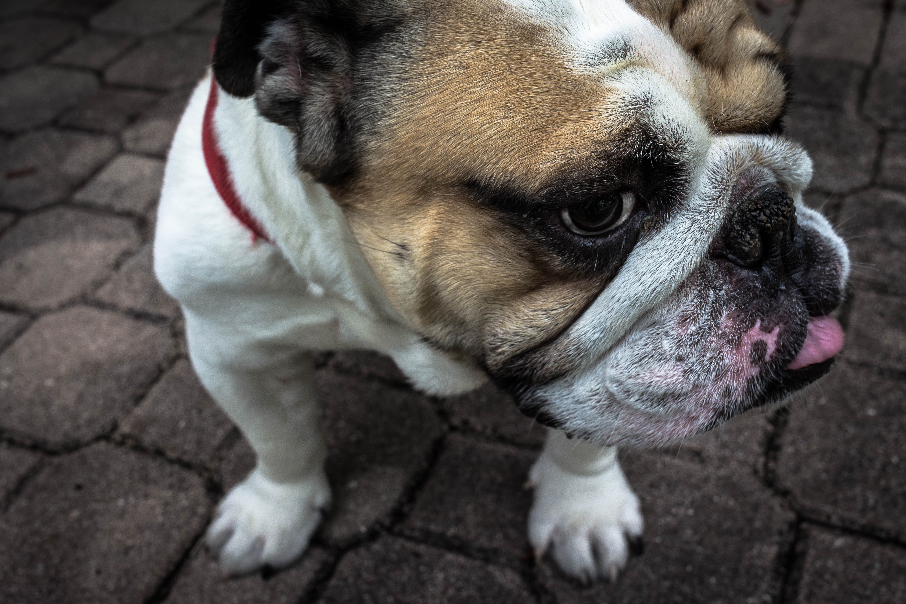

About Us
We were founded in 2030 by Emily McLanahan to take your loving pets to Outer Space for a short visit.


Can our Pets visit Planets?
Of course they can! With our expert guidance, your pet should be able to make the trip smoothly, without any issues.
We don't use any sedatives while we take your pet to space. We have a Vet, as well as a Vet Assistant to help your pet along the way.
Let's Go For A Walk
The Earth looked like a wonderful place to leave and to visit a new land, so I took a nap and decided to go to space!
"I got home safely and comfortably. I even walked on the moon. Thanks so much human family"- Major.
Sign Up
